matplotlib.axes.Axes.set_title¶
-
Axes.set_title(label, fontdict=None, loc=None, pad=None, *, y=None, **kwargs)[source]¶ Set a title for the axes.
Set one of the three available axes titles. The available titles are positioned above the axes in the center, flush with the left edge, and flush with the right edge.
Parameters: - labelstr
Text to use for the title
- fontdictdict
A dictionary controlling the appearance of the title text, the default fontdict is:
{'fontsize': rcParams['axes.titlesize'], 'fontweight': rcParams['axes.titleweight'], 'color': rcParams['axes.titlecolor'], 'verticalalignment': 'baseline', 'horizontalalignment': loc}
- loc{'center', 'left', 'right'}, default:
rcParams["axes.titlelocation"](default:'center') Which title to set.
- yfloat, default:
rcParams["axes.titley"](default:None) Vertical axes loation for the title (1.0 is the top). If None (the default), y is determined automatically to avoid decorators on the axes.
- padfloat, default:
rcParams["axes.titlepad"](default:6.0) The offset of the title from the top of the axes, in points.
Returns: TextThe matplotlib text instance representing the title
Other Parameters:
Examples using matplotlib.axes.Axes.set_title¶


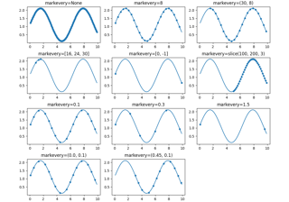


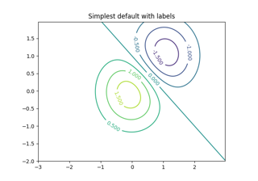
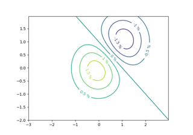
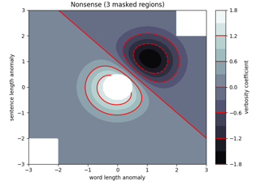


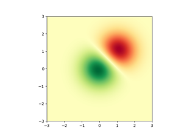
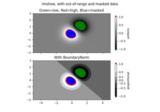
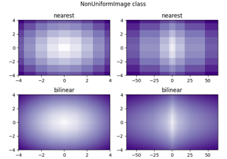


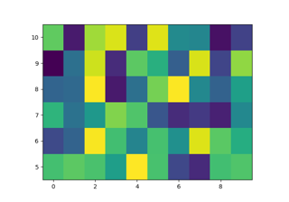


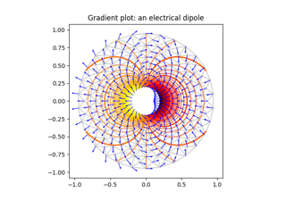
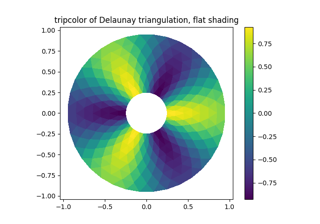


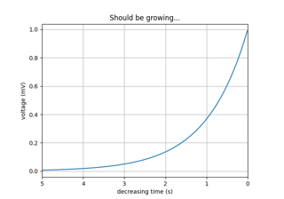
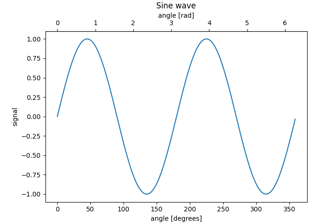


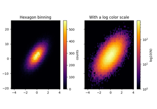

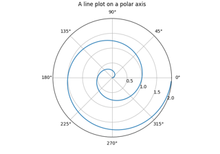


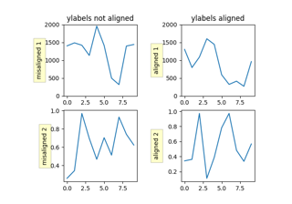
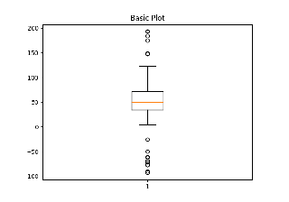
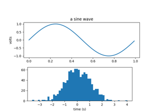

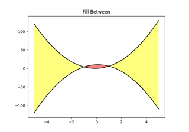


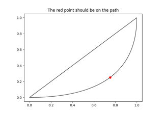

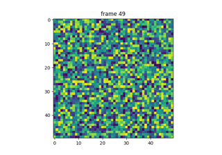

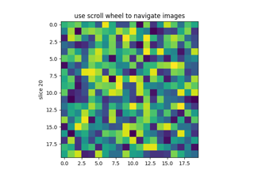

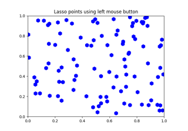